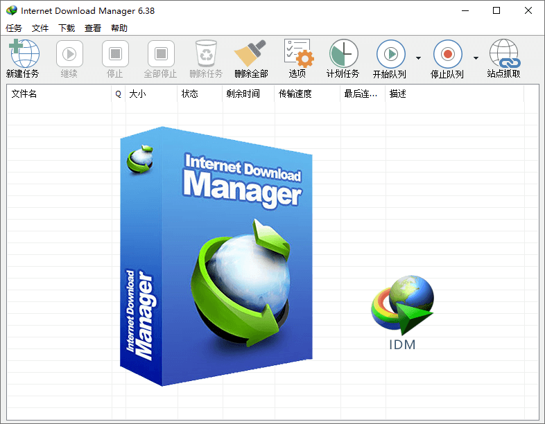

发布日期
04/26
2021
下载工具 - IDM绿色破解版
软件介绍：
Internet Download Manager （IDM）是一个续传和计划下载，能将下载速度提高最多5倍的下载工具。由于连接丢失，网络问题，计算机意外断电关闭，全面的错误恢复和恢复功能将重新启动已下载或中断的下载。简单的图形用户界面使IDM用户友好且易于使用.Internet Download Manager具有智能下载逻辑加速器，具有智能动态文件分段和安全的多部分下载技术，可加快您的下载速度。与其他下载管理器和加速器不同，Internet Download Manager会在下载过程中动态下载文件并重新使用可用连接而无需额外的连接和登录阶段，以实现最佳加速性能。
Internet Download Manager 支持代理服务器，ftp和http协议，防火墙，重定向，cookie，授权，音频和视频内容处理。IDM可以无缝集成到Microsoft Internet Explorer，Netscape，MSN Explorer，AOL，Opera，Mozilla，Mozilla Firefox，Mozilla Firebird，Avant Browser，MyIE2以及所有其他流行的浏览器中，自动处理您的下载任务。您也可以拖放文件，或从命令行使用Internet Download Manager。Internet Download Manager可以在设定的时间拨打您的调制解调器，下载您想要的文件，然后挂机甚至关闭计算机。
其他功能包括多语言支持，zip预览，下载类别，调度程序专业人员，不同事件的声音，HTTPS支持，队列处理器，HTML帮助和教程，下载完成时增强的病毒防护，带配额的渐进式下载（对于使用某种类型的连接非常有用）公平访问政策或FAP，如Direcway，Direct PC，Hughes等），内置下载加速器等等。
官方网站：www.internetdownloadmanager.com
下载地址①：
【蓝奏云】
下载地址②：
【百度云(提取码点击自动复制)】
下载地址③：
【百度云】
功能摘要：
- 自动下载互联网上的任何文件类型。
- 多个数据流下载时使用更快的下载划分。
- 批量下载。
- 导入/导出下载工作。
- 自动/手动更新下载地址。
- 支持队列操作。
- 拥有近期下载列表，方便访问文件。
- 从流媒体视频网站下载视频。
- 动态分段整个下载过程。
- 支持协议HTTP，FTP，HTTPS，MMS [5]和微软的ISA。
来源信息：
OSSSR软件站：【点击访问】
ZD423软件站：【点击访问】
